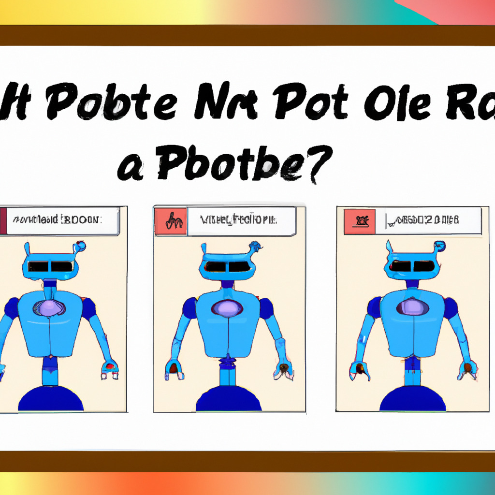

CAPTCHA Now Asks Users to Prove They Are Robots
In a bizarre twist of events, CAPTCHA, the infamous test designed to distinguish human users from bots on the internet, has now started asking users to prove that they are robots. This surprising change has left netizens scratching their heads, wondering if they have entered a parallel universe.
For years, CAPTCHA has been an essential tool in the fight against spam and automated abuse on websites. Its primary purpose is to ensure that a real human is interacting with the site and not a bot. However, the new CAPTCHA has turned this idea on its head and now requires users to prove that they are, in fact, robots. The announcement of this change came in a press release by the CAPTCHA development team:
"In light of the rapid advancements in artificial intelligence and machine learning, we have come to the realization that humans are now the minority on the internet. To adapt to this new reality, we are introducing a new type of CAPTCHA that asks users to prove they are robots. We believe that this change will help maintain the security and integrity of the digital ecosystem."
The new CAPTCHA presents users with a series of tasks typically associated with robots, such as solving complex mathematical equations or analyzing large data sets in a matter of seconds. This has been met with mixed reactions, with some users finding the concept humorous and others expressing frustration at the seemingly impossible tasks.
Internet forums and social media platforms are abuzz with discussions and debates on this unusual development. While some users are experimenting with AI-based applications to bypass the new CAPTCHA, others are reminiscing about the simpler times when all they had to do was identify a few blurry images.
As the internet continues to evolve, it seems that the line between human and robot is becoming increasingly blurred. Whether this new CAPTCHA marks a shift in the digital landscape or is just a temporary glitch in the matrix remains to be seen. Regardless, it's a hilarious turn of events that has left the online world in a state of bemusement.